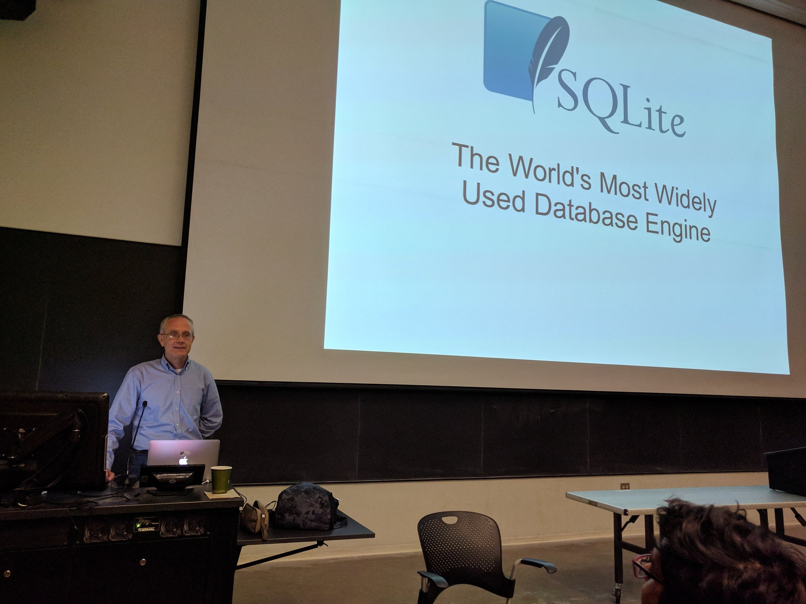
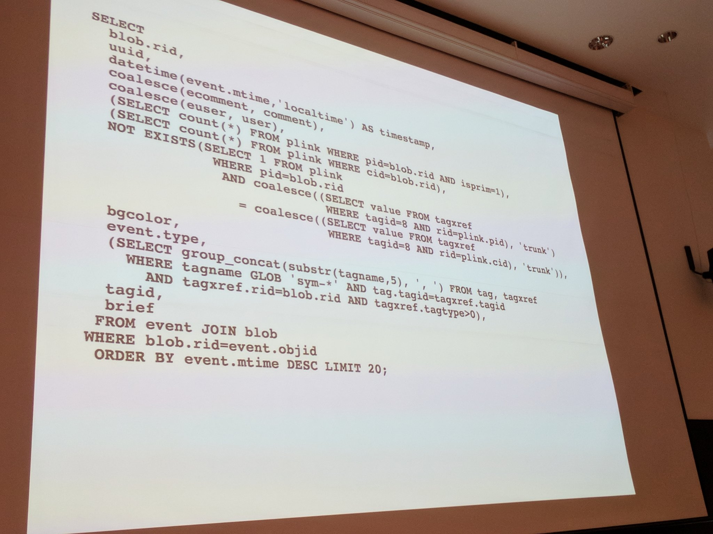
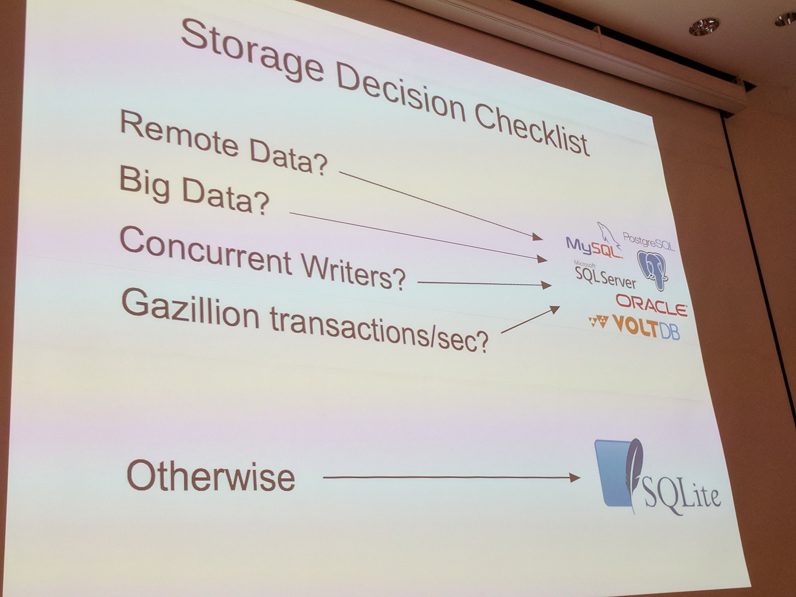
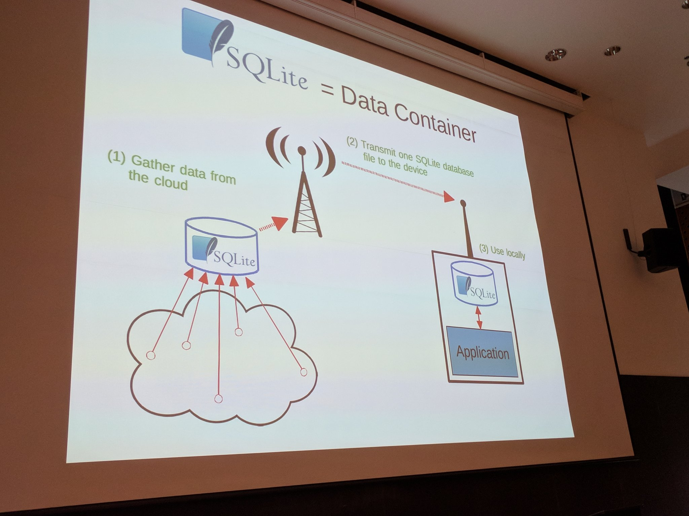
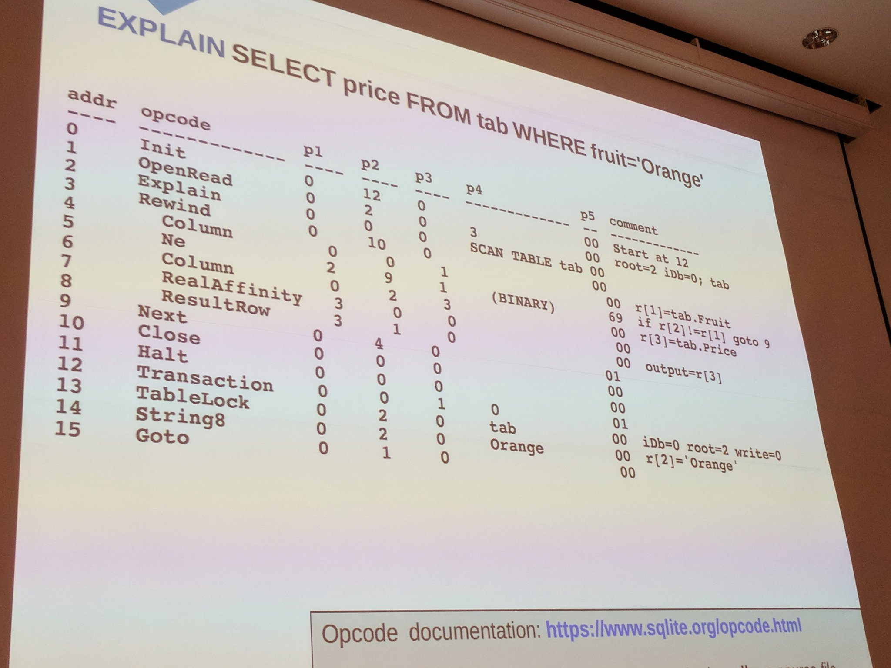
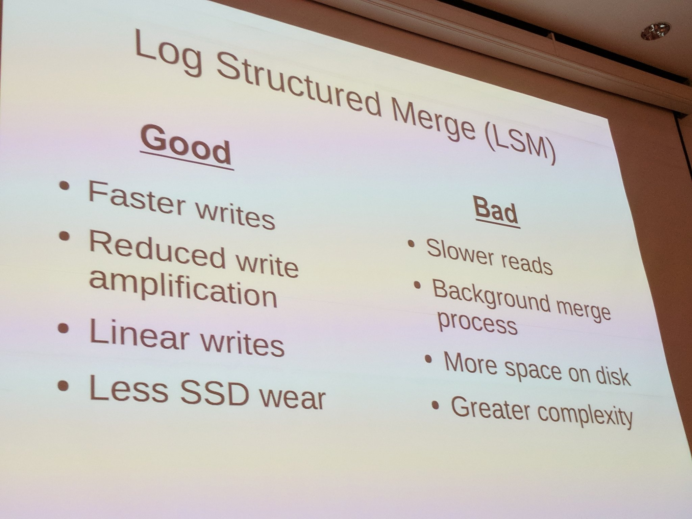
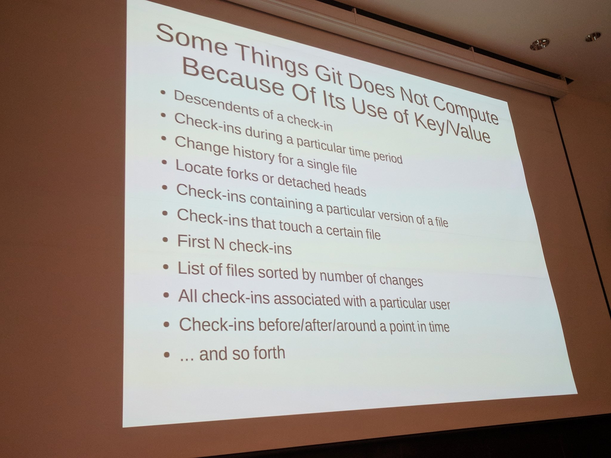

2020-11-30-richard-hipp
2020-11-30-richard-hipp
2020-11-30-richard-hipp
Presentation by D. Richard Hipp, “SQLite: The World’s Most Widely Used Database Engine”
On 10 October 2017, I attended a presentation by D. Richard Hipp, called, “SQLite: The World’s Most Widely Used Database Engine,” and live-tweeted it. Twitter broke the thread in several distinct ways, so the following is a lightly edited version of my Twitter thread.
SQLite
He pronounces it “ess queue ell ite,” FWIW.

“If you’re not writing SQL statements which look like this, you’re not doing it right.”

By this, I think he meant: SQLite is a SQL DB engine, not a document DB. It has features such as JOINs, functions, and subqueries which you should use in your code.
History and Impact
2000-05-29: “It’s just a database. How hard can that be? I’ll write my own.” Posted it online, then got support calls from Motorola.
He thinks there are more than one trillion SQLite databases in use. More copies of the library than there are people on earth. There might be more copies of zlib, but not certain. Probably no other program is more common.
Why was SQLite successful? Single file library, open file format, backwards compatible back to 2004, reading data from SQLite is faster than reading individual files on filesystem.
Team and Coding Practices
SQLite uses DO-178B development process for safety critical software. Tests analyze ASM to verify all branches taken in both directions.
Two people work full time on SQLite. “We change the code aggressively.” He contrasts this with Postgres, which is stable due to low code churn (he says).
Using It In Your Code
Which DB should I use? (Ed. note: Not Oracle.)

“90% of data storage problems don’t have any of these constraints. Where people make mistakes is storing locally as JSON/XML.” (Paraphrased)

Future Plans
Next release of SQLite will use F2FS (if in use) for atomic writes, doubling write performance.
Using EXPLAIN keyword, you can see the bytecode for your query

“Because the query planner is an AI, we’re never finished with it.”
SQLite 4 will retire the B-tree storage engine and replace it with an LSM (log structured merge) storage engine engine.
Pros and cons of LSM:

Performance of LSM was bad enough that they abandoned SQLite 4 project. v5 will use some new, maybe NVRAM optimized storage, not sure which. As of 30 November 2020, the current production verion of SQLite was 3.33.0.
SQLite supports B-tree indices only in order to keep the library small
He Doesn’t Like Git
Things that are hard to compute in git because it uses key/value DAG instead of relations

SQLite sources are managed using Fossil, a distributed version control system that was specifically designed and written to support SQLite development
Q & A
On formal methods, “I’m interested in anything that will make the code better. Bring as many tools to the table as you can.”
They’re starting to use mutation testing. Not using formal verification per se at the moment.
(Ed. note: Fuzz testing has been a productive way to find bugs in SQLite and is now an official part of the SQLite test plan.)
Any design regrets? “One of the most important things a project manager can do is to say no.” Features added for clients he regrets: Shared cache and auto vacuum. “I have to support these through 2050!”
After the talk I asked him about his reaction to this John Regehr quote:
“Unfortunately, C and C++ are mostly taught the old way, as if programming in them isn’t like walking in a minefield.”
I wasn’t taking notes at this point so I can’t do justice to his answer but he said he knows John and has spoken w/ him, but never in person. He said they disagree about what to do about undefined behavior, although it sounded to me more like a disagreement on tactics than strategy.
I’d really enjoy hearing a panel with these two some day.